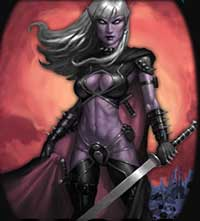
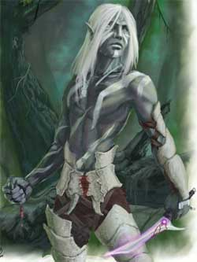

Gli Elfi Scuri sono una razza temuta e misteriosa. Le loro origini si perdono nella preistoria più remota. Vi è una leggenda sulle loro origini, è una vecchia leggenda elfica anteriore alla separazione fra Erlin e Loderin, questa è chiamata in alto elfico “Shin - Rihan” ossia “Triste Storia”, proprio a testimonianza di un grave dolore che nasce nel cuore degli elfi quando narrano questa storia. Si tratta di una famosa leggenda spesso dai nonni ai giovani Elfi Alti inesperti, con tono duro, sembra infatti che tale leggenda conservi un significato non ben identificato che deve essere inteso dallo “Hoarin” (qualche cosa fra il cuore e lo spirito, una specie di anima per gli elfi) di ogni elfo. La “Shin - Rihan” narra dell’ esistenza di Kalian, una dea sorella di Arlinir, forse gemella, ma legata dal fato, contrariamente alla dea degli elfi, a Chaos. E' solo il caso di notare che sia in lingua Erlin che Loderin la parola kalin vuol dire odio. Nel disegno divino ad Arlinir sarebbe dovuto spettare la foresta in cima all’altopiano mentre a Kalian sarebbero spettate le infinite caverne che si trovavano all’interno dello stesso; e così Kalian formò solidificando le ombre delle caverne ed aggiungendovi il fuoco di Chaos una nuova razza di elfi del tutto simile alle altre ma adatta alla vita sotterranea. Nacque così la civiltà di Hideroon, che è anche il nome della città sotterranea che la leggenda dice trovarsi all’interno dell'altopiano. Quando le divinità di Arelia rimasero sole senza più le essenza creatrici, iniziarono una seconda spartizione delle zone di influenza che scatenò la “Guerra degli Dei” durante la quale un potente dio umano (forse Tanatos) decise di avere la supremazia sulle terre emerse. Questo dio si invaghì però della splendida Arlinir alla quale concesse notevoli privilegi mentre si trovò a fronteggiare molte divinità che si opponevano al suo piano egemonico; fra queste era Kalian, che chiese numerose volte ad Arlinir di unirsi a lei e di combattere per gli stessi giusti ideali, ma Arlinir non accolse questo appello anzi isolò completamente la sorella che per resistere strinse un patto con Bazaràk uno dei più potenti oppositori del dio. In questo modo riuscì a resistere nel suo ambiente ideale, nel sottosuolo, ma questo patto fece si che l’intero popolo degli Elfi Scuri diventasse un popolo malvagio dedito a mostruosi sacrifici, spregevole delle altre razze ma comunque con molte doti fisiche e morali (le più risapute sono l’ordine e l’obbedienza). Proprio il leggendario abbandono di Arlinir nei confronti della sorella potrebbe porsi alla base del genetico odio e risentimento che gli Elfi Scuri provano nei confronti degli altri Elfi. Comunemente notizie storiche sugli Elfi Scuri si hanno solo con difficoltà, costoro si sono procurati sfere di influenza nel mondosotterraneo dove hanno creato grosse comunità e vere proprie cittadine. Nel Nordor, durante la caduta dell'impero, alcuni clan si allearono con Artar ed operarono per la distruzione dell'Impero, tali clan dovrebbero essere tuttora attivi in quella zona. Nel Sud-Arelia non si incontrano comunemente ad eccezione dell'Impero Scuro nel quale circolano come regolari cittadini (ciò è avvenuto a partire da una legge pergariana del 123 p.n. inflictus che ne permise la libera circolazione come “cittadini onorari”). Spesso sono utilizzati come sicari date le loro particolari abilità. In molte regioni civilizzate del Sud-Arelia, specie laddove predomina il culto di Tanatos o di Arlinir, non sono tollerati e sono perseguitati come eretici e creature malvagie.

I tratti somatici degli Elfi Scuri variano notevolmente fra i vari individui come accade tra le razze umane. Solitamente il colore della pelle, che è quasi sempre scura con riflessi violacei, varia solo di tonalità passando dal grigio chiaro fino al nero onice. In rari casi questa è chiara, bianca come il colore delle ossa. La maggioranza degli Elfi Scuri, inoltre, ha i capelli di un bianco candido come la neve che diventano grigiastri durante la vecchiaia. I riflessi viola rappresentano bellezza e purezza razziale per tale motivo la pelle di color Indaco Scuro è considerata sinonimo di superiorità razziale, parimenti coloro che possiedono la pelle di color Nero Onice sono considerati puri in quanto tale colore tradizionalmente aiuta gli Elfi Scuri a nascondersi nel buio del sottosuolo. Gli Elfi Scuri di sesso femminile tendono mediamente ad essere fisicamente più intelligenti agili e forti degli uomini nonostante siano di dimensioni minori. Entrambi i sessi, comunque, tendono a mostrare corpi longilinei ed aggraziati.
|
TABELLA PER IL COLORE DEI CAPELLI E DEGLI OCCHI |
|||
| DADO % | COLORE PELLE | COLORE CAPELLI | COLORE OCCHI |
| 1-50 | Grigio Comune | Bianco Neve | Carminio |
| 51-70 | Grigio Scuro | Nero Onice | Nero Onice |
| 71-85 | Grigio Chiaro | Pervinca | Giada |
| 86-92 | Nero Onice | Indaco | Indaco |
| 93-97 | Indaco Scuro | Indaco Scuro | Orchidea |
| 98-100 | Bianco Ossa | Argento | Ambra |
Si noti che per la pelle i colori
Nero Onice,
Indaco Scuro
e Bianco Ossa sono un tratto
somatico raro
ritenuto simbolo di purezza razziale. Per i capelli i colori
Indaco,
Indaco Scuro
ed Argento, sono considerati tratti somatici rari. Per
gli occhi, invece, rappresentano tratti somatici rari i colori
Indaco,
Orchidea ed
Ambra. Per tale motivo un
Elfo Scuro otterrà un bonus
+1 a tutte le prove di appearance
effettuate nei confronti di un altro membro della medesima razza per ogni tratto
somatico raro posseduto, inoltre se possiede tutti e tre i tratti somatici rari costui
riceverà anche un bonus
di +1 a tutte le prove di carisma.
Inoltre, gli occhi di colore Ambra soffrono di meno la
luce solare, per tale motivo, ad ogni esposizione ad una luce alla quale
normalmente sono sensibili chi possiede gli oggi di tale colore avrà il 25% di
probabilità di non soffrire degli effetti negativi previsti dal talento razziale
Sensibilità alla Luce. Tale tiro, una
volta effettuato, mantiene i propri effetti fino a che non cambino le condizioni
di luce.
Inoltre, la pelle di colore Bianco Ossa
è considerato sinonimo di devozione assoluta, corporale, alla dea Kalian. Per
tale motivo, colore che posseggono questo tratto somatico ottengono 3 punti
preghiera bonus se appartenenti ad una classe di sacerdoti, 2 punti preghiera
bonus se appartenenti alla classe dei paladini di Kalian, 1 punto preghiera
bonus se appartenenti ad altre classi. Si noti che questi punti preghiera
potranno essere utilizzati unicamente per memorizzare pregando e lanciare gli
Orison concessi da Kalian ai suoi sacerdoti. Queste magie minori non sono
soggette alle limitazioni sacre per l'equipaggiamento indossabile dai ministri
del culto di Kalian ma richiedono regolarmente le preghiere giornaliere e
l'utilizzo dei componenti previsti dalle singole magie.


|
MODIFICATORE RAZZIALE ALLE ABILITÀ |
| Bonus di +1 alla Destrezza |
| Bonus di +1 alla Intelligenza |
| Penalità di -1 al Costituzione |
| MODIFICATORE BASE AI PUNTI ESPERIENZA | 20% malus |
|
PUNTEGGI MINIMI E MASSIMI RAZZIALI PER LE ABILITÀ |
||
| ABILITÀ | MINIMO | MASSIMO |
| Forza | 9 maschi / 10 femmine | 18 |
| Intelligenza | 9 maschi / 10 femmine | 18 |
| Saggezza | 6 | 18 |
| Costituzione | 6 | 17 |
| Carisma | 6 | 18 |
| Destrezza | 9 maschi / 10 femmine | 19 |
|
ACCESSO ALLE VARIE CLASSI |
|
| CLASSE | LIVELLO MASSIMO |
| WARRIOR - Fighter | 15° livello |
| WARRIOR - Dark Guard | 15° livello |
| WARRIOR - Weapon Master | 13° livello |
| WARRIOR - Archer | 15° livello |
| WARRIOR - Lama Oscura | 15° livello |
| MAGE - Wizard | 16° livello |
| MAGE - Sorcerer | 15° livello |
| MAGE - Coul Collector | 15° livello |
| MAGE - Demonologist | 15° livello |
| MAGE - Magister Formulae | 13° livello |
| MAGE - Alchemist | 12° livello |
| MAGE - Arcanologist | 12° livello |
| MAGE - Erudite | 12° livello |
| MAGE - War Mage | 14° livello |
| ROGUE - Thief | 15° livello |
| ROGUE - Assassin | 15° livello |
| ROGUE - Acrobat | 14° livello |
| ROGUE - Hunter | 12° livello |
| CLERIC - Cleric | 15° livello |
| CLERIC - Negative Master | 14° livello |
| CLERIC - Warpriest | 13° livello |
|
ACCESSO ALLE CLASSI MULTIPLE |
| WARRIOR/MAGE |
| WARRIOR/MAGE - Shadow Bringer |
| WARRIOR/ROGUE |
| WARRIOR/ROGUE - Nightblade |
| ROGUE/MAGE |
|
ACCESSO ALLE DIVINITA' |
| Kalian |
|
ABILITÀ DEI LADRI |
PUNTEGGIO INIZIALE |
| Pick Pocket | 20 % |
| Open Lock | 10 % |
| Find/Rem. Trap | 5 % |
| Move Silently | 15 % |
| Hide in Shadows | 15 % |
| Detect Noise | 20 % |
| Climb Wall | 55 % |
| Read Languages | 5 % |
| FATTORE MOVIMENTO BASE | 8 esagoni |
| SENTIRE RUMORI | 20 % |
|
DIMENSIONI E PESO |
SISTEMA DI CALCOLO DELL'ALTEZZA E DEL PESO |
| Altezza del maschio | 130 cm. + 2 cm. per punto di costituzione + 5d6 cm. |
| Altezza della femmina | 130 cm. + 2 cm. per punto di costituzione + 5d6 cm. |
| Peso del maschio | 45 kg. + 2 kg. per punto di costituzione + 1d4 kg. |
| Peso della femmina | 45 kg. + 2 kg. per punto di costituzione + 1d4 kg. |
|
CATEGORIA DI ETÀ |
ANNI |
| Starting Age | 49 + 3d6 |
| Childhood | 0 - 49 |
| Adolescence | 50 - 79 |
| Adulthood | 80 - 129 |
| Middle Age* | 130 - 169 |
| Old Age** | 170 - 199 |
| Venerable Age*** | 200 + |
| Maximum Age | 200 + 5d10 |
* Middle Age: I
personaggi di questa categoria di età perdono 1 punto di forza ed 1 punto di
costituzione, acquisiscono però 1 punto di intelligenza ed 1 punto di saggezza
(non potendo, in ogni caso, superare i massimi razziali).
** Old Age: I personaggi di questa categoria di età perdono 2 punti di
destrezza, 2 ulteriori punti di forza ed 1 ulteriore punto di costituzione,
acquisiscono però 1 ulteriore punto di saggezza (non potendo, in ogni caso,
superare i massimi razziali).
*** Venerable Age: I personaggi di questa categoria di età perdono 1
ulteriore punto di destrezza, di forza e di costituzione, acquisiscono però 1
ulteriore punto di intelligenza e di saggezza (non potendo, in ogni caso,
superare i massimi razziali).


| NOME | Infravisione (30 metri) |
| COSTO IN PUNTI CREAZIONE | NESSUNO - ACQUISIZIONE AUTOMATICA |
| REQUISITO PARTICOLARE | NESSUNO |
| DESCRIZIONE |
Gli Elfi Scuri
posseggono, oltre alla normale forma di vista, l'infravisione entro
30 metri di raggio. L'infravisione degli Elfi Scuri è così potente
che, quando è attiva, i loro occhi emanano un forte calore. Per questo
motivo chi osserva un Elfo Scuro con l'infravisione noterà due occhi di
un rosso molto intenso su un corpo che mantiene la normale temperatura
corporea.
Perché l’infravisione funzioni occorre che si
al buio lontano da qualsiasi zona illuminata. Se una zona illuminata
si trova entro 30 metri di distanza dal personaggio ed illuminata da
una fonte luminosa capace di illuminare per un raggio di più di 3 metri
l’infravisione non si attiverà. Fonti luminose di minore intensità (come
una candela) impediscono l’attivazione dell'infravisione solo quando il
personaggio si trova all'interno della zona illuminata. Durante la notte
la luce della luna piena e quella della luna maggiore della metà non
permette l'attivazione dell’infravisione, la luce delle stelle e la luce
della luna minore della metà permettono invece l’infravisione. Si noti
che in foreste particolarmente fitte, dove non penetra molta luce, può
attivarsi l’infravisione anche con la luna piena. Gli occhi del
personaggio attivano l’infravisione in modo graduale ed automatico senza
che tale attività degli organi possa essere comandata: |
| NOME | Sensibilità alla Luce |
| COSTO IN PUNTI CREAZIONE | NESSUNO - ACQUISIZIONE AUTOMATICA |
| REQUISITO PARTICOLARE | NESSUNO |
| DESCRIZIONE |
Gli Elfi Scuri hanno una vista molto sensibile e facilmente disturbata da luci intense. Quando un Elfo Scuro guarda qualcosa che si trova in una zona illuminata da una luce in grado di illuminare ad almeno 12 metri di raggio (come un Continual Light) o dalla luce solare del giorno pieno costui riceve una penalità di -1 ai tiri per colpire ed il 10% di fallire nel lancio degli incantesimi. Tale penalità non si applica nella penombra o all'alba ed al tramonto o nelle giornate intensamente nuvolose. Inoltre, se è lo stesso Elfo Scuro a trovarsi illuminato da una luce di simile intensità costui riceverà anche una penalità di -1 a tutte le prove di destrezza, di -1 ai tiri salvezza contro effetti che potrebbero essere evitati o limitati con uno spostamento repentino (ossia contro quei tiri salvezza che solitamente sono modificati dal valore di reaction adjustment della destrezza). |
| NOME | Resistenza alla Magia |
| COSTO IN PUNTI CREAZIONE | NESSUNO - ACQUISIZIONE AUTOMATICA |
| REQUISITO PARTICOLARE | NESSUNO |
| DESCRIZIONE |
Gli Elfi Scuri posseggono una naturale resistenza alla magia. Questa resistenza è pari al 25 % + 1 % per livello di esperienza. Si noti che questa Resistenza alla Magia può essere, con la mera forza del pensiero, annullata completamente dall'Elfo Scuro per l’intero round in questione (si consideri una non azione effettuabile solo a partire dall'inizio del round in corso che impone comunque una penalità di +1 all'iniziativa delle successive azioni). Normalmente, invece, questa resistenza alla magia è attiva e non può essere annullata qualora il personaggio non è sia in grado di pensare correttamente, come ad esempio quando è in coma, dorme, è stordito, ecc… |
| NOME | Stasi |
| COSTO IN PUNTI CREAZIONE | NESSUNO - ACQUISIZIONE AUTOMATICA |
| REQUISITO PARTICOLARE | NESSUNO |
| DESCRIZIONE |
Gli Elfi Scuri non dormono come le altre creature, ma ottengono il riposo attraverso uno stato fisico chiamato stasi. Ciò, nonostante costoro possano comunque dormire nel modo comune del termine qualora lo desiderino. Quando gli elfi riposano tramite la stasi, rivivono le esperienze migliori e peggiori della propria vita ripercorrendole esattamente come queste erano state vissute senza poter controllare quali esperienze ritornino alla loro mente. Quando, invece, gli elfi dormono nel senso convenzionale del termine, costoro possono sognare a tutti gli effetti. Per tale motivo, gli incantesimi ed i poteri che modificano, manipolano od alterano i sogni delle creature o gli effetti che si applicano alle creature che sognano non possono essere utilizzati sugli elfi che riposano in stasi ma solo su quelli che hanno deciso di dormire in modo regolare. Nonostante la stasi rappresenti fondamentalmente un modo per riposare, questa tecnica di riposo è di grande importanza per gli elfi. Ciò poiché essendo la durata delle loro vita incredibilmente lunga, periodicamente costoro hanno bisogno di rivivere gli eventi trascorsi della loro esistenza, per mantenere integra la loro personalità ed aiutare la loro memoria. Questo non comune metodo di riposare inoltre, spiega la straordinaria resistenza degli elfi agli effetti magici di sonno e di charm. Per entrare in stasi gli elfi devono utilizzare una posizione comoda (affine a quella utilizzabile dagli uomini quando dormono) non potendo costoro entrare in stasi in posizioni scomode od in piedi. Quando gli elfi entrano in stasi, socchiudono gli occhi e rilassano completamente il proprio corpo, continuando però ad essere coscienti di ciò che accade nei loro dintorni. Tuttavia costoro non possono influenzare ciò che li circonda più di quanto un uomo possa influenzare ciò che gli sta attorno durante il sonno. A differenza degli umani, però, essendo gli elfi consapevoli di ciò che accade loro intorno, costoro possono decidere di uscire dalla stasi (svegliandosi) da soli, attraverso un forte atto di volontà. Quando ciò si verifica, l'elfo tornerà cosciente ma resterà, comunque, confuso per un breve lasso di tempo, come accade ad una qualsiasi altra creatura quando questa si sveglia. |
| NOME | Tolleranza alle Variazioni Climatiche |
| COSTO IN PUNTI CREAZIONE | NESSUNO - ACQUISIZIONE AUTOMATICA |
| REQUISITO PARTICOLARE | NESSUNO |
| DESCRIZIONE |
Gli Elfi Scuri sono particolarmente resistenti ai cambiamenti climatici ed alle rispettive variazioni di caldo e freddo. Ciò avviene poiché costoro riescono facilmente ad adattarsi ai vari climi della natura. Tra gli 0° ed i 38° gradi celsius, infatti, gli elfi non risentono assolutamente dei cambiamenti dovuti al variare della temperatura. Oltre i 38° e sotto gli 0° però, costoro subiscono gli effetti negativi del clima come chiunque altro, senza ottenere alcun beneficio e necessitando di adeguare il proprio vestiario di conseguenza. |
| NOME | Resistenza alle Malattie |
| COSTO IN PUNTI CREAZIONE | NESSUNO - ACQUISIZIONE AUTOMATICA |
| REQUISITO PARTICOLARE | NESSUNO |
| DESCRIZIONE |
Nonostante la loro bassa costituzione e la loro apparente fragilità, gli Elfi Scuri hanno sviluppato nei millenni una notevole resistenza alle malattie comuni. Non tutti gli elfi posseggono la stessa resistenza alle malattie cambiando questa da individuo ad individuo. In termini di gioco, questa resistenza può variare dal 5 al 50% ed ogni personaggio di questa razza potrà tirare, in fase di creazione, 1d10 * 5% per determinare la propria resistenza personale alle malattie comuni. In ogni occasione di contagio, quindi, l'elfo dovrà effettuare il tiro per verificare se ha resistito allo stesso. Se il tiro percentuale ha successo il contagio è automaticamente escluso altrimenti l'elfo avrà comunque diritto al normale tiro salvezza eventualmente previsto per evitarlo. Questa resistenza non si applica alle malattie magiche o di altri piani dimensionali diversi dal Primo Piano Materiale laddove non diversamente specificato. Occorre, infine, notare che esistono alcune rare malattie che colpiscono unicamente gli elfi come e contro le quali il loro fisico non è resistente (Attacco dei Funghi Debilitanti, Debolezza Corporea Acuta, Radice Ventricolare). In questi ultimi casi di contagio gli elfi avranno diritto ad effettuare unicamente il tiro salvezza laddove sia lo stesso previsto. |
| NOME | Percezione dei Passaggi Nascosti |
| COSTO IN PUNTI CREAZIONE | 1 |
| REQUISITO PARTICOLARE | NESSUNO |
| DESCRIZIONE |
Alcuni Elfi Scuri
hanno sviluppato un particolare senso che permette loro di percepire con
maggiore attenzione la struttura dell'ambiente che li circonda. Questi
elfi, quindi, potranno con maggiore facilità notare nella struttura
dell'ambiente particolarità che sfuggono a membri di altre razze, come
ad esempio una flebile luce o una tenue corrente d'aria che fuoriesce da
una sottile fessura nel muro. Per tale motivo gli elfi che scelgono
questo talento razziale ottengono il seguente beneficio: |
| NOME | Agilità Superiore |
| COSTO IN PUNTI CREAZIONE | 2 |
| REQUISITO PARTICOLARE | PUNTEGGIO IN DESTREZZA ALMENO PARI A 13 |
|
DESCRIZIONE  |
Gli Elfi Scuri
posseggono un fisico particolarmente agile rispetto alle altre razze. In
particolare, alcuni elfi sono nettamente superiori rispetto ai membri
delle altre razze nell'effettuare alcuni tipi di prove di agilità. Per
tale motivo, gli Elfi Scuri che scelgono questo talento razziale
ottengono il seguente beneficio: |
| NOME | Armi della Tradizione Oscura |
| COSTO IN PUNTI CREAZIONE | 2 |
| REQUISITO PARTICOLARE | NESSUNO |
| DESCRIZIONE |
Gli Elfi Scuri
hanno la propensione per l'utilizzo di alcune specifiche armi che da
secoli la loro razza utilizza in battaglia. In particolare, rientrano
nella tradizione degli Elfi Scuri le seguenti armi:
No Dachi,
Katana,
Wakizashi,
Balestre da mano, Balestra leggera.
Per tale motivo coloro che possiedono questo talento razziale ottengono
i seguenti benefici: |
| NOME | Inclinazione ad Uccidere |
| COSTO IN PUNTI CREAZIONE | 3 |
| REQUISITO PARTICOLARE | ALLINEAMENTO MALVAGIO (EVIL) |
DESCRIZIONE |
Alcuni Elfi Scuri sono
contraddistinti da tale malvagità da risultare insensibili alla vita
altrui. Per tale motivo costoro ricevono i seguenti benefici:
|
| NOME | Inclinazione Magica Naturale |
| COSTO IN PUNTI CREAZIONE | 1 / 2 / 3 / 4 |
| REQUISITO PARTICOLARE |
ACQUISTABILE SOLO DAGLI UTENTI DI MAGIA PUNTEGGIO IN INTELLIGENZA RISPETTIVAMENTE ALMENO PARI A 15 / 16 / 17 / 18 |
| DESCRIZIONE |
La natura magica della
razza elfica aiuta costoro, qualora abbiano intrapreso la carriera
di utenti di magia, ad utilizzare gli incantesimi che hanno studiato.
Per tale motivo, gli Elfi Scuri che acquistano questo talento razziale ottengono il seguente beneficio: |
| NOME | Capacità Magiche Naturali | |||||||||||||||||||||||||||||||||||||||||||||||||||||||||||||||||||||||||||
| COSTO IN PUNTI CREAZIONE | VARIABILE | |||||||||||||||||||||||||||||||||||||||||||||||||||||||||||||||||||||||||||
| REQUISITO PARTICOLARE | PUNTEGGIO IN INTELLIGENZA VARIABILE | |||||||||||||||||||||||||||||||||||||||||||||||||||||||||||||||||||||||||||
| DESCRIZIONE |
La natura magica della razza degli Elfi Scuri dona ad alcuni di loro dei poteri magici innati. Questi poteri magici si considerano incantesimi a tutti gli effetti e ne seguono pedissequamente le regole di utilizzo, ciò ad eccezione del limite al lancio dovuto ad indossare le corazze (l'eccezione non copre la regola che impone il necessario lancio delle magie di tipo somatico a mani libere). Per tale motivo, gli Elfi Scuri che acquistano questo talento razziale potranno utilizzare una volta al giorno l'incantesimo prescelto. Costoro, infatti, potranno scegliere, a seconda dei punti creazione investiti in questo talento razziale, uno o più incantesimi selezionandoli dalla seguente lista (si noti che ogni incantamento potrà essere selezionato un'unica volta):
Detect Magic (Divination)
|
|
POTENZA DELL'INCANTAMENTO |
PUNTI ESPERIENZA |
| Least Minor Enchantment | 75 punti esperienza |
| Lesser Minor Enchantment | 100 punti esperienza |
| Minor Enchantment | 150 punti esperienza |
| Superior Minor Enchantment | 250 punti esperienza |
| Greater Minor Enchantment | 375 punti esperienza |
| Lesser Enchantment | 500 punti esperienza |
| Superior Enchantment | 1000 punti esperienza |
| Greater Enchantment | 1500 punti esperienza |
Range: 6 metri + 3 metri
per livello
Components: V, S, M
Duration: 1 turno + 1 round/livello
Casting Time: 2
Area of Effect: Sfera di 9 metri di diametro
Saving Throw: None
Lanciando questo questo incantesimo il mago oscura la luce
presente nell'area d'effetto. Tale oscurità impedisce anche il
funzionamento dell'infravisione ma non la sua attivazione. Chi si trova
all'interno dell'area si troverà immerso in una cortina di buio e non
vedrà la luce proveniente dall'esterno. Chi si trova fuori l'area,
invece, vedrà una sfera nera che impedirà di guardare dentro ed
attraverso la stessa. Una magia di light od una altra magia di luce in
grado di illuminare come o di più della magia light, che sia lanciata
sull'effetto del darkness con l'intenzione di eliminarlo lo dissolverà
non sortendo, però, alcun altro effetto. Il componente materiale di
questo incantesimo è un dose di pece dal valore di 2 monete d'argento e
dal peso di 1/10 di libbra che si consuma al lancio dell'incantesimo.
Range: 60 metri
Components: V, S
Duration: Istantanea
Casting Time: 6
Area of Effect: Sfera di 3 metri di diametro
Saving Throw: None
Quando il
chierico lancia questa magia ha una certa possibilità di dissipare
l'energia magica presente nell'area d'effetto. In particolare, all'uso
di questa magia, potranno verificarsi una serie di effetti (si noti che
la magia proverà automaticamente a dissipare tutta la magia presente
nell'area senza che il chierico possa operare alcuna forma di selezione
o distinzione).
In primo luogo il chierico ha una certa possibilità di dissolvere
effetti magici presenti nell'area d'effetto, nonché quelli attivi sulle
creature o sugli oggetti presenti nella medesima area. Tali effetti
magici possono essere scaturiti dal lancio di incantesimi, dall'uso di
poteri magici innati oppure dall'utilizzo di oggetti magici. Orbene, per
determinare se il chierico è riuscito a dissipare questa forma di magia
presente nell'area lo stesso dovrà effettuare un tiro con 1d20 (si noti
che se il chierico vuole dissipare effetti magici di incantesimi
lanciati da se stesso questo tiro si considererà automaticamente
avvenuto con successo senza che lo stesso debba effettuarlo, ciò non
vale però per effetti magici che il chierico ha attivato in altro modo
come ad esempio attraverso l'uso di oggetti magici). La possibilità base
di dissipare la magia sarà pari ad un tiro di 11 o più (corrispondente
quindi al 50% di possibilità).Occorrerà, quindi, confrontare il livello
di lancio di questa magia con quello dell'effetto magico presente
nell'area. Per ogni livello di differenza il chierico riceverà un
bonus/malus di +1 al tiro. Se ad esempio un chierico lancia una magia di
dispel magic al 5° livello di lancio in un'area dove è presente una
creatura che è sotto l'effetto di una magia di invisibilità lanciata al
3° livello il chierico usufruirà di un bonus di +2, dissipando, quindi,
l'invisibilità con un tiro pari a 9 o più. Si tenga presente che un tiro
pari a 20 si considera in ogni caso successo automatico laddove un tiro
pari ad 1 sarà comunque un insuccesso. Se il tiro ha successo l'effetto
magico sarà stato definitivamente dissipato. Si noti che il livello di
lancio degli effetti magici varia a seconda della fonte di tale effetto
e può essere determinato consultando la seguente tabella:
| FONTE DELL'EFFETTO MAGICO | LIVELLO DI LANCIO |
| Incantesimo di mago o chierico | Livello di lancio della magia |
| Potere magico innato | Livello specificato oppure dadi vita della creatura |
| Minor Enchantment | 5° livello di lancio |
| Bacchetta Magica | 6° livello di lancio |
| Staffa | 8° livello di lancio |
| Pozione | 12° livello di lancio |
| Altri oggetti magici | 12° livello di lancio |
| Artefatti | Normalmente resistono alla magia dispel magic |
In secondo luogo questo incantesimo può dissipare la magia con la quale sono stati incantati gli oggetti magici presenti nell'area d'effetto (ciò, quindi, indipendentemente dall'uso che ne era stato fatto). Per ogni oggetto magico presente occorrerà effettuare un tiro con 1d20. La possibilità base di dissipare la magia sarà sempre pari ad un tiro di 11 o più (corrispondente quindi al 50% di possibilità).Occorrerà, quindi, confrontare il livello di lancio di questa magia con il livello corrispondente all'incantamento che è stato infuso nell'oggetto magico. Per ogni livello di differenza, quindi, il chierico riceverà un bonus/malus di +1 al tiro. Se, quindi, il tiro ha successo l'oggetto magico sarà disattivato 1d3+1 rounds (nei quali va calcolato il round in cui si è verificato il dispel magic) ed i suoi poteri non potranno essere utilizzati. Per fare alcuni esempi una pergamena magica letta non sortirà alcun effetto (né potranno consumarsi le magie presenti o verificarne la corretta scrittura) ed un'arma magica +2 si considererà per tale periodo una comune arma non dando più benefici e non permettendo di colpire le creature immuni alle armi normali. Si tenga presente che un tiro pari a 20 si considera in ogni caso successo automatico laddove un tiro pari ad 1 sarà comunque un insuccesso. Infine occorre notare che a differenza di ogni altro oggetto magico qualora l'incantamento di un liquido magico (come una pozione) sia dissolto con successo questi perderà definitivamente ed irrimediabilmente ogni potere magico. Per determinare il livello di lancio corrispondente agli incantamenti presenti sui vari oggetti si consulti la seguente tabella:
|
POTENZA DELL'INCANTAMENTO |
PUNTI ESPERIENZA |
LIVELLO CORRISPONDENTE |
| Least Minor Enchantment | 75 punti esperienza | 5° livello di lancio |
| Lesser Minor Enchantment | 100 punti esperienza | 6° livello di lancio |
| Minor Enchantment | 150 punti esperienza | 7° livello di lancio |
| Superior Minor Enchantment | 250 punti esperienza | 8° livello di lancio |
| Greater Minor Enchantment | 375 punti esperienza | 9° livello di lancio |
| Lesser Enchantment | 500 punti esperienza | 11° livello di lancio |
| Superior Enchantment | 1000 punti esperienza | 13° livello di lancio |
| Greater Enchantment | 1500 punti esperienza | 15° livello di lancio |
| Oggetti di potenza superiore | per ogni 500 punti esperienza | +1 livello di lancio oltre al 15° |
| Pozioni Magiche | Irrilevante | 12° livello di lancio |
| Pergamene Magiche | Irrilevante | 10° livello di lancio |
| Artefatti | Irrilevante | Impossibile dissolverne il potere |
Infine occorre osservare che questa magia ha effetto solo sugli effetti magici già presenti nell'area d'effetto al momento del lancio non influenzando quindi l'utilizzo di oggetti magici ed il lancio di incantesimo che avvengono nel medesimo round di combattimento ma ad un fattore di iniziativa successivo a quello del dispel magic.
| NOME | Tocco Oscuro di Kalian |
| COSTO IN PUNTI CREAZIONE | VARIABILE |
| REQUISITO PARTICOLARE | PUNTEGGIO IN SAGGEZZA ALMENO PARI A 9 |
| DESCRIZIONE |
Alcuni Elfi Scuri sono in grado di incantare temporaneamente i dardi delle loro balestre in modo tale da caricarli di veleno. Questo potere deve essere necessariamente utilizzato come free action con componente meramente vocale nel momento in cui l'Elfo Scuro carica la propria balestra. Il dardo, inoltre, deve essere sparato nel medesimo round in cui è incantato, in quanto l'effetto magico svanirà alla fine del round di lancio. Per tale motivo, gli Elfi Scuri che acquistano questo talento razziale potranno utilizzarlo una volta al giorno, più una volta supplementare ogni due livelli di esperienza raggiunti oltre il primo (1 dardo al 1° e 2° livello di esperienza, 2 dardi al 3° e 4° livello di esperienza, e così via...); fino ad un massimo di 5 dardi al giorno al 9° livello di esperienza. Costoro, infatti, potranno scegliere, a seconda dei punti creazione investiti in questo talento razziale, un tipo di veleno selezionato dalla seguente lista (si noti che questo talento potrà essere acquistato un'unica volta): Tocco
del Centipede
Tocco del Ragno
Tocco del Dolore |
| NOME | Agilità in Combattimento |
| COSTO IN PUNTI CREAZIONE | 3 |
| REQUISITO PARTICOLARE | PUNTEGGIO IN DESTREZZA ALMENO PARI A 13 |
| DESCRIZIONE |
Alcuni Elfi Scuri danno
il meglio di loro durante i combattimenti quando sfruttano tecniche
basate sull'agilità dei loro movimenti. Per tale motivo, gli Elfi Scuri
che possiedono questo talento razziale ricevono i seguenti benefici: |
| NOME | Campione nell'Uso delle Balestre |
| COSTO IN PUNTI CREAZIONE | 3 + 5% malus punti esperienza |
| REQUISITO PARTICOLARE | NESSUNO |
| DESCRIZIONE |
Alcuni Elfi Scuri hanno
trascorso la loro lunga gioventù allenandosi nell'uso delle balestre.
La balestra, infatti, rappresenta l'arma da tiro per eccellenza utilizzata
dal popolo degli elfi scuri. Per questo incredibile addestramento questi Elfi
Scuri
ottengono il seguente beneficio: |
| NOME | Lama Tenebrosa |
| COSTO IN PUNTI CREAZIONE | 4 |
| REQUISITO PARTICOLARE | Classe THIEF (qualora non abbia scelto alcun altro talento speciale dei vagabondi talentuosi) oppure classe ASSASSIN |
|
DESCRIZIONE  |
Alcuni Elfi Scuri, ladri o assassini, sono in grado di incantare temporaneamente i loro pugnali in modo tale da caricarli di potere negativo. In particolare costoro possono invocare la dea Kalian affinché infonda, su una qualsiasi arma del gruppo dei "pugnali" nonché su una spada del tipo katana oppure wakizashi che stanno impugnando, il suo malefico potere sacro. Attivare il potere si considera una free action che comporta unicamente una penalità di +3 all'iniziativa del personaggio durante il round di attivazione. Una volta attivata, la lama del pugnale apparirà circondata da un fioco alone di luce violastra chiaramente visibile ad occhio nudo. L'effetto durerà 3 rounds + 1 round ogni due livelli oltre il primo (3 rounds al 1° e 2° livello, 4 rounds al 3° e 4° livello, 5 rounds al 5° e 6° livello, e così via) a partire da quello di attivazione. Se durante l'effetto l'arma colpirà un avversario gli procurerà 1d6 danni addizionali da energia negativa, inoltre l'arma assorbirà l'energia vitale della vittima direzionandola sul possessore. Ad ogni colpo inferto, quindi, il possessore si curerà per la metà dei danni da energia negativa effettivamente causati alla vittima arrotondati per difetto (ossia si curerà 1 punto ferita se provocherà 1, 2 o 3 danni negativi, 2 punti ferita se provocherà 4 o 5 danni negativi, 3 punti ferita se provocherà 6 danni negativi). I non morti ed i costruiti sono immuni agli effetti di questo incantamento. Si noti che i danni negativi sono prodotti prima dei danni fisici dell'arma. Una volta utilizzato il potere non potrà essere utilizzato nuovamente prima del successivo flusso di energia divina di Kalian (il momento utilizzato da Kalian è il cuore della notte, alle ore 1.30). |